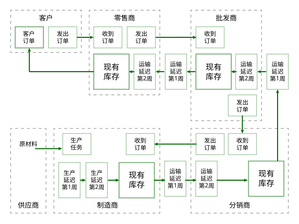

简介
啤酒游戏源于MIT，是一个简化了的生产-分销模型，用来模拟供应链中的物流和信息流。该游戏通常用来说明简单供应链的牛鞭效应。啤酒游戏的供应链包括1个制造商、1个分销商、1个批发商和1个零售商，顾客到零售商处购买啤酒，零售商将所有的库存货物都用来满足顾客需求，未满足的需求部分将作为累积需求，留待以后再行满足。零售商向批发商发出补给订单，批发商反过来向分销商订购，分销商再向制造商订购，而制造商则从供应商处获取原材料。在这一游戏中，在供应链的每两个阶段之间加入一个内过渡阶段，可以解决延迟问题。如图1所示。

这四个角色及其职责如下表所示:
| 零售商 | 批发商 | 分销商 | 生产商 |
|---|---|---|---|
| 向批发商订货 | 向分销商订货 | 向生产商订货 | 安排啤酒酿制任务 |
| 从批发商处取货 | 从分销商处取货 | 从生产商处取货 | 从供应商处取货 |
| 管理零售商库存 | 管理批发商库存 | 管理分销商库存 | 管理生产商库存 |
| 向顾客出售啤酒 | 向零售商出售啤酒 | 向批发商出售啤酒 | 向分销商出售啤酒 |
为保证游戏的顺利进行，特设立一个顾客角色，担任此角色的同学仅仅在每一个新的周期开始时向零售商提供本期的顾客需求，但此角色可以从宏观上观察整个游戏过程，来体会供应链的运营过程。
因此，整个游戏由5个人组成来共同完成。
游戏规则说明:
- 游戏开始前，教师将为每个参预者分配在供应链中承担的角色，指定每组游戏中信息传播的途径和延迟期；
- 库存和订单等数目用小纸片来代替，每次在小纸片上写上相关数额表示本期的库存数、订单数、运输数等；
- 下游厂商的订单要经过一定的延迟期才能最终被上游厂商满足。其中，订单处理期为1周，运输延迟期和生产提前期为1周或2周；
- 各级厂商每期要清算库存量和缺货量，每单位存货在每单位时间的库存成本为$0.50，每单位缺货在每单位时间的惩罚成本为$1.00，期末以总运营成本的高低为优劣判断标准；
- 游戏共进行50周，其中前30周只有零售商可直接看到来自市场的订单需求，其余各级厂商都只能通过相邻的下游厂商的订单来推测市场需求，任何两个环节都不能私自交流信息；后20周市场的订单需求被各级厂商所共享使用，但任何两个厂商不得就决策方式进行交流。
游戏活动说明:
每期各级厂商所要处理的活动包括:
第1步
运送在途的啤酒。将啤酒从“运输延迟第1周”运抵至“运输延迟第2周”，或从“运输延迟第2周”/“运输延迟1周”运抵至各级厂商的“现有库存”；（对制造商，就是从相应的“生产延迟”内进行运送）
第2步
接受并处理下游厂商的订单。读取来自下游厂商的订单，并在本级厂商“收到订单”处作相应记录；
- 从订单接收箱里取出订单，并将订购量作为本期需求登在记录表上。
- 将本期需求和前期累积需求加和，计算出总需求量。
第3步
供应下游厂商的需求。将库存箱内的库存量与总需求量比较，取最小值；然后把等量的货物从库存箱转至运输延迟1，将该转移量计为运输量。
如果现有库存量不足以满足下游厂商的需求，则推迟到后期满足。每期各级厂商需要供应的需求量可用下式表示:
本期需供应的需求 = 本期收到的订单 + 前期缺货量
第4步
记录库存量和缺货量。清点“现有库存”，并在记录表中做记录；如有缺货，需在“本期缺货”里做记录；
本期缺货量 = 本期需供应的需求 - 本期发出的啤酒
比如，在上期有7瓶啤酒的缺货，而本期向下游发出4瓶啤酒，但同时又收到8瓶啤酒的订单，则本期最终缺货量为（7-4+8）=11瓶啤酒；
第5步
确定下期订单数量。各级向上游厂商订货（制造商确定生产任务），并在本级“发出订单”（生产商在“生产任务”）中做记录；
- 对于零售商、批发商和分销商来说，用订单条向供应商发出补给订单，并将订单条放在订单发出箱内。在记录表上登录为已发出的订单。
- 对制造商:确定生产任务中的生产数量，同时把原生产任务箱中的任务移入生产延迟1。
- 将订单发出箱中的订单移到位于上游环节的订单箱中。 本期缺货量=（本期需供应的需求-本期发出的啤酒）
- 顾客角色:递交给零售商下期顾客订单。
游戏结束后，请每个参预者对自己的各期库存量和各期缺货量进行汇总统计，并计算相应发生的成本，并请每个参预者根据自己收到的订单情况对市场需求量进行估计。
游戏初始条件:
- 零售商、批发商、分销商、生产商各有12瓶啤酒的存货
- 每个运输延迟环节各有4瓶啤酒
- 每个订单接收环节个有4瓶啤酒的订单
游戏作业:
每个小组在游戏完毕后，画出游戏过程中每个环节的订单变化曲线图、库存变化曲线图、需求变化曲线图，并简要说明体会。
本作业每个小组一份。